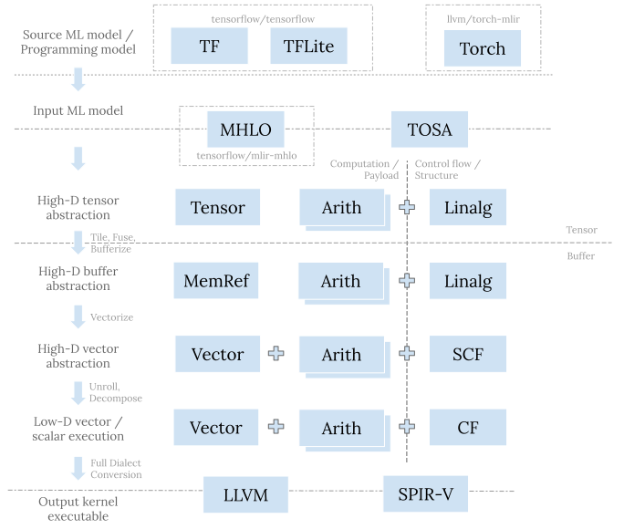

The initial blog post in this series captured my overall take on the evolution trends of compilers and IRs. It also touched on LLVM IR, SPIR-V, and MLIR, explaining the problems they are addressing and design focuses thereof. Today I will expand on MLIR and talk about its dialect hierarchy for machine learning (ML) compilers systematically.
To remind, MLIR is a general compiler infrastructure; it is not specifically for ML and can support building any domain specific compilers. But its application to the ML domain is indeed where we see the most vigorous development, especially for writing compilers to convert models from existing ML frameworks and target heterogeneous hardware.
Building Blocks
One great strength of a compiler-based approach is its composability. For example, if individual features A, B, and C work, their various combinations should generally work. This nature is one of compilers' key differences from libraries, where we can see different combinations go to completely separate manually-tuned paths. Turning a combinatorial problem into a linear one is a great save on engineering efforts.
Factoring out basic building blocks appropriately is important for achieving such composability. In IRs, it’s common to define suitable operations for such purposes. But for ML, it’s hard to have a properly layered and well organized stack by only using operations, because of the huge semantic gap between source programs and target hardware, and the breadth of sources and targets. For this, MLIR enables a higher level of building blocks using dialects.
A dialect is basically a namespace that contains a coherent set of operations and associated supporting types and attributes to model some concept or abstraction. A ML compiler pieces together dialects, with its own customization and extensions when necessary. MLIR dialects have a few interesting characteristics worth mentioning—
Operations carrying structures
Operations are the atomic entities in compilers, for both representation and transformation. We have flexibility to put operations in basic blocks and then in functions. But those are just two thin levels of structures; semantics still largely depends on individual operations and pattern matching happens on (meshes of) individual operations. It’s rather difficult to “customize” existing operations or compose operations in a tight fashion to set “boundaries” for applying patterns.
One key feature of MLIR operations is it can nest structures internally,
using the region mechanism.
This enables a plethora of structured operations carrying payloads.
Those operations themselves define semantics for some structure (e.g., control
flow) that can be attached to the payload operations;
the payload-carrying operations and payload operations compose and extend
each other.
A prominent example is the linalg.generic op;
functions and modules under the hood are also such payload-carrying ops
in MLIR.
Regions keep those payload ops contained as pattern application boundaries
in general.
Types signaling abstraction levels
Ultimately, operations are just some sort of “computation” on values of certain types. It’s types that represent the abstraction levels they operate on more intimately. For example, we can have an addition operation on either tensors, buffers, or scalars. There are not many differences among the addition operations per se, but they clearly are at different levels—tensors belong to high-level ML frameworks or programming models, buffers map to middle-level memory hierarchies on execution machines, and scalars are for low-level registers inside the chip.
A MLIR dialect has the freedom to define its own types. The core infrastructure tries its best to treat types from various dialects equally and provide generic mechanisms like type conversion to facilitate handling types. Dialect A can also reuse types form dialect B directly or compose them further, e.g., put primitive types in container types. A dialect can also define rules to convert from/to types defined in other dialects, inject those rules into a type converter, and let all the rules compose; so that the framework can figure out a path to convert types. But in general, type composition and conversion is trickier and subject to more restrictions than operations.
Dialects as modeling granularity
Allowing defining types and operations processing those types, dialects are the granularity for conceptual modeling. If two dialects operate on the same set of types, they are largely at the same abstraction level. It follows that converting dialects with different types are converting different abstraction levels.
To make life easier, we would typically lower from high- to low-level via some sort of decomposition (tiling, vectorization, etc.) and lowering from abstract to concrete concepts via some sort of resource assignment (bufferization, register allocation, etc.). But these steps are still hard due to the fact that different abstractions offer different correctness and performance characteristics. So it’s not surprising that dialect conversion arguably embodies the most complexity among various MLIR mechanisms.
Dialect Hierarchy
The above section talked about dialects as the building blocks for piecing together ML compilers abstractly. Both types and operations are composable and extensible to make it happen. In this section I’ll be more concrete by talking about existing dialects and putting them into a hierarchy to show the flow. The goal here is to focus on major components so that it’s easier to see the overall picture. So this is not meant to be a complete survey of existing dialects.
Problem space
First let’s revisit the problem space and define the scope of the discussion. ML compilers faces both depth and breadth challenges—
- At the top level, ML models are typically authored with some framework using Python. The source program, or programming model, contains high-level operations operating on high-D tensors. At the bottom level, the main computation of the model is typically executed by some dedicated vector/SIMD instruction or special accelerator. The target hardware, or machine model, only provides low-level instructions operating on low-D vectors or scalars.
- There are a plethora of ML frameworks one can use to write ML models. There is also a lot of hardware that can execute ML models, which is just computation at its core. Hardware targets can offer different compute and memory hierarchies, but it’s common to see tiled-based architectures in CPU, GPU, and various accelerators. Other than CPU, these hardware targets typically cannot execute the full ML model, which requires supporting arbitrary control flow and various synchronization mechanisms. So the CPU is still needed for orchestration.
A real end-to-end ML compiler targeting heterogeneous hardware needs to take in
a source ML model and generate both kernels running on accelerators and
scheduling and synchronization logic running on CPU.
There are existing dialects for all of them.
In this blog post, the focus is on those for kernel CodeGen side; I’ll leave
scheduling and synchronization (e.g., the async dialect in
MLIR, the stream dialect in IREE), which traditionally
belong to the runtime, to a later blog post.
Overall picture
From the type’s perspective, a layered stack needs to have proper modeling for tensors, buffers, vectors, and scalars, and provide support to decompose and lower them gradually. From the operation’s perspective, we need to have computation and control flow. Control flow can be explicit as branches, or implicit as the innate structure of payload-carrying operations. Using these as the dimensions to put various dialects in a lowering hierarchy:

High-level model dialects
From the top we have the source model expressed via some ML framework.
The source model is typically immediately imported into MLIR system with a
framework-specific dialect, e.g., the tf dialect for TensorFlow,
the tfl dialect for TFLite, and the torch
dialect for PyTorch).
The purpose of these dialects is to faithfully represent the source model for
the specific framework.
So they typically directly reside in the framework repo given the tight
relationship.
The depth and breadth challenges would require a ML compiler stack to have an
hourglass structure to be manageable.
The next step is to consolidate various framework representations into some
common ML model dialect that serve as inputs to the further shared lowering
steps.
This is a place where we expect to see further development, in the hope that
eventually we will have a coherent set of definitions (either in one or more
dialects) to fully support representing various ML models from different
frameworks and provide the necessary compatibility guarantees, etc.
But as of today, we have the mhlo dialect and the tosa
dialect here.
The former is a descendant of XLA and is the bridge for TensorFlow;
the latter is a specification with precise numeric guarantees, increasingly
used for multiple frameworks.
Middle-level lowering dialects
Now we are at the middle level of the compiler. High- or low-level dialects are typically at the boundary of MLIR systems and need to faithfully model some external entities. Middle-level dialects do not have such constraints, so they can enjoy much more design flexibility.
Middle-level dialects can be viewed as partial IRs, compared to traditional IRs like LLVM IR or SPIR-V, which are complete in the sense that they are self-contained and have all necessary instructions to represent whole CPU/GPU programs. This is meant for decoupling and composability. We mix multiple dialects at this level to represent the original model, some for the computation or payload, some for the control flow or structure.
The linalg dialect
The linalg dialect is one of the major dialects for
representing structures.
At its core, a linalg op captures a perfect loop nest—its indexing maps
specify how the loop induction variables access its operands or results.
The region inside a linalg op captures the payload computation happening
inside the loop nest.
The perfect loop nest is implicit, i.e., there are no explicit loop structures
in the IR.
This key property helps to simplify many analyses and transformations.
For example, to fuse two perfect loop nests, traditionally we need to analyze
the range of each induction variable and how they access elements; it’s quite
convoluted.
With indexing maps to implicitly represent the loop nest, it’s as simple as
performing inverse(producerIndexMap).compose(consumerIndexMap).
There are also other key design considerations behind linalg ops described
in the documentation, which is well worth a
read.
There are many ops in the linalg dialect; two large categories are structured
“generic” ops and “named” ops.
The former contains only the linalg.generic op, which is
really the core and “raw” form of structured linalg ops.
Named linalg ops like the linalg.matmul op and various
linalg.conv* ops are just sugar over the linalg.generic op,
with known specific indexing maps and payload computations.
One can convert from the named form to generic forms
easily.
Having a consistent structure among various linalg ops simplifies
transformations because transformations can just be written against indexing
maps and regions regardless of the specific op.
The linalg dialect can operate on both tensors and buffers.
In MLIR, they are represented by the tensor type and memref type,
respectively.
Both are high-level N-D abstractions and can be of dynamic shapes.
Tensors, tiling and fusion
Both the mhlo and tosa dialects convert to the linalg dialect.
The conversion will remain in tensor abstractions, so based on previous
discussions, this is not really converting different abstraction levels.
It’s converting op representations for further transformations—although
we have like the mhlo.dot_general op or tosa.matmul
op representing batch matmul and arguably they are not that
different from the linalg.batch_matmul op,
the linalg.batch_matmul op has the implicit loop nest making it great for
transformations like tiling and fusion, which are crucial
for generating code towards tiled-based architectures.
We just need to materialize some loop nests and shrink the scale of linalg
ops down to slices.
As an example, say we have the following input ML ops:
%0 = "tosa.conv2d"(%input, %filter, %bias)
{dilation = [1, 1], pad = [0, 0, 0, 0], stride = [2, 2]}
: (tensor<1x225x225x3xf32>, tensor<32x3x3x3xf32>, tensor<32xf32>)
-> tensor<1x112x112x32xf32>
Converting to linalg ops and performing tiling and fusion gives us:
%0 = scf.for %iv0 = ... to ... step ... iter_args(...) -> (tensor<1x112x112x32xf32>) {
%1 = scf.for ... {
%input_slice = tensor.extract_slice ...
%filter_slice = tensor.extract_slice ...
%bias_slice = tensor.extract_slice ...
%conv = linalg.conv_2d_nhwc_hwcf {...} ins(%input_slice, %filter_slice) ...
%generic = linalg.generic ins(%conv, %bias_slice} ... {
%add = arith.addf ...
linalg.yield %add ...
}
scf.yield %generic
}
scf.yield %1
}
Buffers, distribution
Thus far we are only working on tensors. Tensors are immutable values that are integral identity and have no side effects. SSA def-use chain can be used for data flow analysis. This makes transforming tensor ops simple. But still, at some point we need to assign tensors to buffers. This is called bufferization in mlir. Buffers are mutable and can alias; transformations on buffers may require convoluted dependency and aliasing analyses. So in MLIR the general trend is to push bufferization to a later stage when possible, like, after vectorization, to move other transformations forward and make it as mechanical.
Bufferization is really a conversion between different abstraction levels. We go from abstract values into concrete resources residing in memory. How to map various tensors to buffers is both a technical and policy issue, as we would like to avoid hazards and unnecessary copies. This part is still evolving fast in MLIR. After bufferization, we can perform distribution to distribute different problem tiles to different hardware tiles (CPU threads, GPU workgroups, GPU workitems, etc.). The previous example would become:
scf.for %ivz = (%idz * %tilez) to %ubz step (%countz * %tilez) {
scf.for ... {
%input_subview = memref.subview ...
%filter_subview = memref.subview ...
%bias_subview = memref.subview ...
%output_subview = memref.subview ...
linalg.conv_2d_nhwc_hwcf {...}
ins(%input_subview, %filter_subview) outs(%output_subview) ...
linalg.generic
ins(%output_subview, %bias_subview) outs(%ouput_subview) ... {
%add = arith.addf ...
linalg.yield %add ...
}
}
}
The tensor, memref, arith, math dialect
The flow in the above uses ops from the tensor dialect,
memref dialect, arith dialect, and
math dialect.
tensor and memref dialects contain ops for handling tensors and buffers
respectively. In the above flow they are used to facilitate representing
the tiled IR structure (with tensor.*slice and memref.subview ops).
They can additionally be used for tensor/memref generation, shape manipulation,
and others that don’t fit into the payload plus structure paradigm.
arith and math ops are for various computation, with the former for basic
integer and floating point operations, and the later for more advanced ones.
They are just the payload ops to compose with payload carrying structured ops,
and can actually operate on multiple abstraction levels, including tensors,
vectors, and scalars.
So we see they appear basically at all steps in the previous graph.
The vector dialect
Aside from the linalg dialect, the vector dialect is
another major dialect for structured code generation.
If we say that tensors are at the abstract programming model level and buffers are at the concrete machine memory level, then vectors are at chip register level. They are closer to the hardware architecture and thus face more reality constraints. We can have an unlimited number of tensors in a model. Bufferization is one level of resource allocation—it maps them to buffers in memory. Along the way, we can reuse the same buffer for less memory footprint and eliding copies. But in general, memory is flexible (e.g., we can dynamically index into it) and offer large capacity. Vectors are quite different—they require static shapes and there are often very limited amounts of registers in a chip. How to best utilize the registers and vector/SIMD/SIMT compute units is another level of resource allocation that is subject to many trade-offs.
In MLIR, the vector dialect is multiple-level by itself.
Aside from the machine-native vector operations, it also supports high-dimension
virtual vectors and machine-agnostic operations.
The general idea is to progressive lowering to decompose high-dimension vectors
into low-dimension ones and go from machine-agnostic to machine-native.
Vectorization, unrolling, hoisting, canonicalization
Using the linalg dialect we can tile operations to create static-sized tiles.
Then vectorization can kick in to vectorize tiles from
tensors/buffers to vectors of the same rank and shape.
Vectorization creates vector.transfer_read ops to read
data from tensors or buffers into virtual vectors, creates vector (e.g.,
the vector.contract op) or arith ops to compute on them,
and then creates vector.transfer_write ops to write
the result back.
Vector transfer ops are powerful abstractions that can model various modes of
load/store from memory, including stride and padding supports.
Here it is different from traditional vectorization, where we need to raise the abstraction level by going from scalars to vectors. In MLIR, vectorization converts abstraction levels, but it is still mostly mechanical due to the fact that we maintain the original shape.
After vectorization, we can then perform unrolling and
decomposition to lower the high-dimension vector ops into
low-dimension to match the target architecture.
Machine-agnostic vector ops can also be lowered to machine-native ones, for
example, converting vector.contract ops into vector.fma ops.
After unrolling, decomposition, and lowering, hoisting and and various other canonicalization help to clean up the IR, especially to cancel various vector read/write or insert/extract pairs.
Now our example should look like:
scf.for %ivz = (%idz * %tilez) to %ubz step (%countz * %tilez) {
scf.for ... {
%input_subview = memref.subview ...
%filter_subview = memref.subview ...
%bias_subview = memref.subview ...
%output_subview = memref.subview ...
vector.transfer_read %input_subview ...
vector.transfer_read %filter_subivew ...
...
%v0 = vector.fma ...
%v1 = vector.fma ...
...
vector.transfer_write %v0, %output_subview ...
vector.transfer_write %v1, %output_subview ...
...
}
}
The vector dialect uses intra-dialect conversions for progressive lowering.
The patterns are typically minimal and mechanical, but together they really
compose and show great power.
Though properly ordering and applying them is a bit tricky.
The scf, cf dialect
After the linalg dialect, the scf dialect is used as the
structure to hold payload ops.
The scf dialect contains structured control flow ops, notably the scf.if
op for conditions and the scf.for op op for loops.
These ops again explicitly capture loop ranges and use regions as the
boundaries, making analysis and transformation easier.
Once we are at the final form of control flow, distributed loop nests can be
elided given they only have one trip now. The rest can be lowered into
traditional cf ops with basic blocks.
We are almost at the end of the conversion flow. Next is to perform full dialect conversion to export into another system.
Low-level target dialects
At the low-level, we have two dialects in MLIR right now—the llvm
dialect and the spv dialect.
They model the LLVM IR and SPIR-V respectively.
Converting to them prepares the IR for exporting to external systems.
Given they model external IRs, they are subject to constraints from external
IRs, including ops and types.
And the conversion is full dialect conversion, which eliminates any ops not
in llvm or spv dialect.
Typically no major optimizations are expected to happen in the low-level dialects; those should be done at higher levels. Transformations here are mostly generic canonicalization and cleanup, and some additional passes for legality guarantees.
Closing Words
This blog post turns out to be lengthier than I originally planned again. Thanks for reading this one through! A quick recap—
ML compilers face both depth and breadth challenges. Dialects are the higher level of building blocks provided in MLIR to address these challenges. Ideally ML compilers would just need to piece together dialects, with its own customization and extensions when necessary. This is a larger granularity than trying to fit together all operations from different levels and sources and targets. Each dialect is a coherent set of operations and types. So it’s much more manageable this way and would result in a better layered and organized stack. Though this vision might take quite some time to fully realize!
I put major CodeGen dialects in a conversion flow to show their hierarchy, and also talked about major transformations along the way. In general, MLIR favors lowering from high- to low-level via some sort of decomposition (tiling, vectorization, etc.) and from abstract to concrete concepts via some sort of resource assignment (bufferization, register allocation, etc.). Dialects and patterns are means to achieve that, and they are designed to require minimal analyses and compose well.
If you want to learn more details, Alex’s post in Discourse is a great read. Also this new MLIR paper discussing CodeGen specifically by many of my colleagues. In a future blog post, I’ll talk about the runtime and scheduling side. Stay tuned!